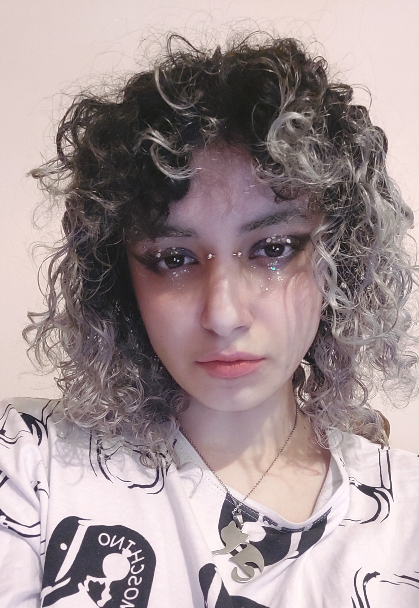

Hello, I'm Storme, currently a computer engineering student. I have a strong affinity for creativity in various forms. Writing unsettling stories and transforming them into games is my passion in life.
My primary experience lies in computer vision and natural language processing research, where I like to explore the scientific boundaries. I've completed two internships at EPFL, which allowed me to delve into areas such as NLP, psychology, and art analysis.
When life lets me, I work on new ideas to create obnoxious little worlds and experiences. I'm particularly drawn to narrative-driven games that encourage players to explore their own identity, beliefs, and perception of reality.
In my future work, I aspire to provoke discomfort by shedding light on the harsh realities we tend to ignore. My objective is to serve as a voice for those without one, employing games and narratives that push the boundaries of our comfort zones.